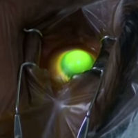

ВАЖНОЕ ЗАМЕЧАНИЕ: Пациенты, которые испытывают проблемы из-за сшивания коллагена роговицы, должны отправьте отчет о медицинском наблюдении свяжитесь с Управлением по санитарному надзору за качеством пищевых продуктов и медикаментов онлайн. Кроме того, вы можете позвонить в Управление по санитарному надзору за качеством пищевых продуктов и медикаментов по телефону 1-800-FDA-1088 и сообщить об этом по телефону или загрузить Мобильное приложение MedWatcher для сообщения о проблемах с перекрестными ссылками в FDA с помощью смартфона или планшета.Являетесь ли вы пациентом, которому предстоит или уже проводилось сшивание коллагена роговицы? Присоединяйтесь к обсуждению на FaceBook
Что такое сшивание коллагена роговицы? Кросслинкинг роговичного коллагена (CCL, CXL) - это лечение прогрессирующего кератоконуса или эктазия роговицы (также известная как кератэктазия) после рефракционной хирургии, в первую очередь LASIK. Цель сшивания - остановить прогрессирование заболевания. (Предупреждение для пациентов с эктазией, прошедших курс LASIK: если эктазия в настоящее время не прогрессирует, могут возникнуть НИКАКОЙ ПОЛЬЗЫ к сшиванию).
Нормальная роговица имеет поперечные сшивки между коллагеновыми волокнами, которые делают ее прочной и способной сохранять свою естественную форму. Роговица естественным образом создает новые коллагеновые сшивки в ответ на повреждения, вызванные курением, сахарным диабетом и старением.
Сшивка коллагеном роговицы включает в себя насыщение роговицы фотосенсибилизатором - раствором офтальмологического рибофлавина (витамина В2) - с последующим ультрафиолетовым облучением. Фотоокислительное повреждение вызывает образование новых коллагеновых сшивок, которые укрепляют и стабилизируют роговицу. Если толщина роговицы составляет менее 400 мкм, следует избегать сшивания.
Статья, описывающая процедуру сшивания с точки зрения непрофессионала
Что такое эктазия роговицы? Эктазия роговицы это прогрессирующее выпячивание или скругление передней поверхности роговицы, возникающее в результате биомеханического повреждения роговицы. Кератоконус - это естественное эктатическое заболевание роговицы. Эктазия также может быть результатом хирургического истончения роговицы во время операции LASIK.
Как LASIK вызывает эктазию роговицы? Коллагеновые волокна роговицы обеспечивают ее форму и биомеханическую прочность. Процедура LASIK истончает роговицу и разрывает коллагеновые нити, что приводит к необратимому ослаблению роговицы. Это может привести к прогрессирующему выпячиванию или утолщению поверхности роговицы - состоянию, известному как эктазия роговицы, характеризующемуся потерей зрения с наилучшей коррекцией и возможной недостаточностью роговицы, требующей пересадки роговицы.
Сообщалось о рисках и побочных эффектах кросслинкинга роговичного коллагена рибофлавином/UVA : Временное помутнение (до 100%), постоянные рубцы на роговице (часто), отек роговицы (у большинства глаз), потеря стромальных нервов, потеря чувствительности роговицы, сухость глаз, потеря и повреждение клеток роговицы (кератоцитов) (до 100%), инфекция, повреждение роговицы. эндотелий, герпетический кератит, потеря остроты зрения с наилучшей коррекцией, расплавление роговицы, дефекты эпителия, стерильные инфильтраты, диффузный пластинчатый кератит (ДЛК), диффузное субэпителиальное помутнение, перфорация роговицы, точечный кератит, стрии роговицы, светобоязнь, гиперемия конъюнктивы, раздражение глаз, дискомфорт в глазах, отек век, ощущение инородного тела, чрезмерная слезотечение, воспаление передней камеры, яркий свет, гиперемия глаз, нарушение зрения, отек роговицы, нарушение зрения, кератит, дисфункция мейбомиевой железы, клетки передней камеры, напряжение зрения, головная боль, ореольное зрение, истирание роговицы, боль в глазах, ремоделирование роговицы (ухудшение зрения), повреждение стволовых клеток, неудача лечения, необходимость в второе лечение - сильное уплощение роговицы с течением времени с сопутствующей тяжелой дальнозоркостью., центральная токсическая кератопатия (ЦТК), и затуманенное зрение.
Исследование показало, что сшивание коллагена роговицы может привести к необратимой потере важных клеток роговицы
Мюллер и др. Гистологические изменения роговицы при кератоконусе после сшивания - Расширение результатов. Cornea. Март 2020;39(3):333-341. doi: 10.1097/ICO.00000000000002144.
цель:
Изучить патогистологические, иммуногистохимические и электронно-микроскопические данные в 8 образцах после кератопластики с применением кросслинкинга коллагеном роговицы (CXL) по поводу кератоконуса. Были проанализированы пять новых (о которых ранее не сообщалось) и 3 ранее опубликованных образца.
методы:
Роговичные бугорки 8 роговиц с кератоконусом (через 5-114 месяцев после CXL) сравнивали с 5 образцами кератоконуса без CXL и 5 нормальными роговицами на предмет морфологических изменений. Пупырышки роговицы оценивали с помощью световой микроскопии и иммуногистохимии с использованием антител к CD34, PGP 9.5, нестину, обратной транскриптазе теломеразы и Ki67, а также просвечивающей электронной микроскопии.
результаты:
При кератоконусе роговицы после CXL наблюдалась значительная потеря кератоцитов (за исключением 1 образца с повышенным количеством кератоцитов), тогда как при кератоконусе роговицы без CXL наблюдалась более высокая плотность кератоцитов по сравнению со здоровыми контрольными группами. Потеря кератоцитов может быть клинически связана с помутнением и перфорацией роговицы. В роговицах после CXL оставшиеся кератоциты оказались более полиморфными и выявили иную экспрессию поверхностных маркеров, аналогичных кератоцитам в рубцах на роговице. CXL не влиял на наличие протеогликанов, нервов и эндотелиальных клеток.
выводы:
CXL может вызвать необратимую потерю кератоцитов или повторное заселение измененных кератоцитов, что приводит к клиническим осложнениям, таким как помутнение или перфорация роговицы. Несмотря на хороший профиль безопасности и высокую эффективность при прогрессирующем кератоконусе, CXL следует проводить в соответствии с действующими рекомендациями, строго придерживаясь протокола и стандартов безопасности.
Некоторые побочные эффекты кросслинкинга коллагеном роговицы проходят в течение нескольких недель или месяцев. Другие требуют медицинского вмешательства. Осложнения могут привести к необратимому ухудшению зрения и необходимости пересадки роговицы.
Как выполняется процедура сшивания (CXL)? В удаление эпителия Процедура CXL (стандартный протокол), при которой проводится местная анестезия для обезболивания роговицы. Передняя поверхность роговицы - эпителий - механически удаляется/разрушается, обнажая стромальную ткань роговицы. Затем местно вводят раствор рибофлавина. Затем роговица облучается источником ультрафиолетового излучения в течение заданного периода времени. После операции назначаются антибиотики и кортикостероидные капли, а также накладываются контактные линзы с пластырем. Контактная линза с пластырем остается на месте в течение нескольких дней, пока не заживет эпителий.
Некоторые хирурги предпочитают оставлять эпителий нетронутым во время процедуры сшивания. То эпителий-на эта методика вызывает меньшую боль и ускоряет послеоперационное восстановление, но сторонники стандартного протокола считают ее менее эффективной. Среди офтальмохирургов продолжаются споры о том, какая методика лучше.
Это кросслинкинга роговичного коллагена, одобрение? После совещания консультантов FDA, состоявшегося 24 февраля 2015 года, агентство одобрило процедуру CCL для лечения прогрессирующего кератоконуса в апреле 2016 года. В июле 2016 года FDA одобрило показания к эктазии роговицы. Нажмите здесь для получения полной информации Информация по назначению для Avedro PHOTREXA VISCOUS, PHOTREXA и системы KXL .
Прочитать статью: Производитель устройств пострадал из-за травмированных пациентов на заседании FDA
В настоящее время проводятся дополнительные клинические испытания кросс-линкинга роговичного коллагена. Узнайте больше о клинических испытаниях по лечению эктазии роговицы с помощью кросс-линкинга роговичного коллагена на ClinicalTrials.gov . Это сделано исключительно в информационных целях. Веб-мастер этого сайта не одобряет такие методы лечения.
Каковы альтернативы кросслинкингу коллагеном роговицы? Жесткие газопроницаемые контактные линзы являются наиболее безопасным вариантом, и их следует примерить перед сшиванием. Возможно, что эктазия роговицы после операции LASIK может стабилизироваться без сшивки. Если контактные линзы не работают, хирургические методы включают в себя создание сегментов внутрироговичного кольца (ICR) или ПОТРЕБЛЯЕМЫЕ ВЕЩЕСТВА , и пересадка роговицы . (Примечание: Веб-мастер этого сайта не поддерживает ICRS/INTACS.)
Безопасно ли сшивание роговичного коллагена и работает ли оно? Процедура сопряжена с рисками и имеет ограничения. Лечение показано только в случаях активного прогрессирования заболевания. Эктазия после операции LASIK может стабилизироваться без хирургического вмешательства.
ККЛ, по-видимому, более эффективна при лечении кератоконуса, чем при лечении эктазии после операции LASIK. Слои роговицы, расположенные ближе к поверхности, получают наибольшую пользу от ККЛ. Эффект лечения распространяется глубже в роговицу. По этой причине, по-видимому, большая часть пользы от применения лоскута в глазах после LASIK теряется, поскольку лоскут LASIK постоянно отделяется от подлежащей роговицы и, следовательно, не обеспечивает биомеханической прочности роговицы.
Долгосрочная эффективность стабилизирующего эффекта сшивания коллагена роговицы при лечении эктазии после операции LASIK точно не установлена.
В одном исследовании возраст пациента старше 35 лет был определен как значительный фактор риска осложнений. (Источник: Коллер и др. Частота осложнений и неудач после кросслинкинга роговицы. J Рефракционная хирургия катаракты. Август 2009 г.; 35(8):1358-62.)
В другой публикации сообщалось, что итальянское исследование показало, что пациенты с кератоконусом в возрасте до 26 лет, получавшие CXL, показали наибольшую пользу. (Источник: Raiskup et al. Перекрестное сшивание роговицы рибофлавином и ультрафиолетом А. Часть II. Клинические показания и результаты. Ocul Surf. Апрель 2013;11(2):93-108.)
Как насчет сшивания при нестабильности/эктазии роговицы после RK (лучевой кератотомии)?
ККЛ может привести к повторному открытию старых разрезов на роговице. На изображениях ниже показана роговица пациента, перенесшего ККЛ после операции. На фотографии слева показано наложение швов на вновь открытые разрезы через две недели после процедуры. На фотографии справа видны значительные фиброзные рубцы вдоль зашитых разрезов через 6 месяцев. Нажмите на изображение, чтобы увеличить.
Отчет по делу
Падманабхан и др. Экстремальное выравнивание роговицы после сшивания коллагеном для лечения прогрессирующего кератоконуса . Eur, 2 августа 2020 года, Офтальмологический журнал;1120672120947664. doi: 10.1177/1120672120947664.
Цель: Изучить клинические, томографические и денситометрические особенности глаз, у которых после кросслинкинга коллагеном (CXL) при прогрессирующем кератоконусе наблюдалось уплощение роговицы более чем на 5 дней, и определить предоперационные факторы, способствующие прогнозированию такого ответа.
Методы: Это было ретроспективное исследование "случай-контроль", в котором приняли участие 548 глаз с прогрессирующим кератоконусом, которым была проведена операция по удалению эпителия CXL (Дрезденский протокол) с последующим наблюдением от 1 до 10 лет. Глаза, которые показали 5-дневное уплощение роговицы при максимальной кератометрии (Kmax) после CXL (группа A), сравнивали с одним глазом остальных пациентов из той же когорты (группа B). В обеих группах сравнивались изменения рефракции и остроты зрения, Kmax и тончайшая пахиметрия. Однофакторный и многофакторный регрессионный анализ выявил дооперационные факторы риска необычного уплощения роговицы.
Результаты: Сорок три глаза в группе А были сравнены с 502 глазами в группе В. Во время максимального выравнивания в группе А наблюдалось большее выравнивание (-7,6 ± 3,2 Мкм) и истончение (-53,7 ± 45,2 мкм), чем в группе В (-1,69 ± 2,9 Мкм и -26,6 ± 36,7 мкм соответственно). Многофакторный анализ, основанный на параметрах, предложенных в результате однофакторного регрессионного анализа, выявил, что Kmax до операции является наиболее значимым предиктором интенсивного уплощения роговицы. Анализ подгруппы из K-подобранных глаз показал, что продолжительность периода после CXL была значительным фактором риска чрезмерного уплощения роговицы после CXL.
Заключение: У 7,85% пациентов с кератоконусом, перенесших CXL, было зафиксировано интенсивное уплощение роговицы > 5 дней при Kmax. Высокая предоперационная Kmax и продолжительность периода после CXL были значимыми предикторами такого ответа, который сопровождался значительным истончением роговицы.
Отчет по делу
Танери и др. Эктазия Роговицы После Операции LASIK В Сочетании С Профилактическим Сшиванием Роговицы . J Рефракционная хирургия. 1 января 2017;33(1):50-52.
ЦЕЛЬ: Описать случай односторонней эктазии роговицы после операции LASIK в сочетании с профилактическим сшиванием роговицы (CXL) у молодого пациента.
МЕТОДЫ: Отчет о конкретном случае.
РЕЗУЛЬТАТЫ: Предоперационная топография была ничем не примечательной на обоих глазах при минимальной толщине роговицы 554 мкм на правом глазу и 546 мкм на левом глазу. Дооперационная скорректированная острота зрения вдаль (CDVA) составила 1,0 (20/20 по Снеллену) на обоих глазах при рефракции +1,25 -2,75 в 10 раз на правом глазу и +0,50 -2,00 в 163 раза на левом глазу. Операция LASIK в сочетании с CXL прошла без осложнений. Через 12 месяцев послеоперационная топография была ничем не примечательной, острота зрения вдаль (UDVA) составила 1,0 на обоих глазах без коррекции. Через два года после операции пациентка обратилась с жалобами на потерю зрения (UDVA 0,25) и уменьшение рельефа левого глаза. Для остановки дальнейшего прогрессирования была выполнена стандартная CXL-операция.
ВЫВОДЫ: Этот отчет показывает, что используемый в настоящее время профилактический протокол CXL в сочетании с LASIK, возможно, не всегда эффективно предотвращает эктазию роговицы.
Отчет по делу
Кимионис и др. Чрезмерный Сглаживание и Истончение роговицы После кросслинкинга: Отчет Об Одном Случае С 5-летним Наблюдением. Роговица. Июнь 2015;34(6):704-6.
Цель: Представить случай значительного прогрессирующего уплощения и истончения роговицы после кросслинкинга (CXL), за которым наблюдали в течение 5 лет.
Методы: Отчет о конкретном случае.
Результаты: В марте 2009 года 23-летняя женщина с двусторонним прогрессирующим кератоконусом получила лечение CXL (Дрезденский протокол) для обоих глаз. У пациентки наблюдалось постепенное значительное истончение роговицы (с 464 мкм до операции до 243 мкм) и прогрессирующее уплощение (изменение сферического эквивалента на +11,1 диоптрий) на правом глазу в течение 5 лет. Другой глаз оставался стабильным в течение того же послеоперационного периода.
Выводы: Это первое сообщение о значительном прогрессирующем уплощении и истончении роговицы после прохождения лечения CXL по поводу прогрессирующего кератоконуса.
Новости
4/1/2015: Группа врачей получила пощечину от Письмо с предупреждением FDA Из письма: "Наше расследование показало, что CXL-USA не смогла обеспечить надлежащий мониторинг протокола [отредактировано]. В частности, в ходе проверки вы указали, что CXL-USA (1) не изучала данные или записи, связанные с исследованиями, (2) не проводила никакого мониторинга на месте и (3) полагалась на "самоконтроль на месте".;
2/11/2015: Томас С. Тума, доктор медицины, получил пощечину от Письмо с предупреждением FDA для проведения исследования сшивания коллагена роговицы на людях без одобрения FDA.
Сшивающие звенья коллагена роговицы
Объявление о встрече FDA от 24.02.2015
Слайды для совещания FDA от 24.02.2015
Запись веб-трансляции заседания FDA от 24.02.2015
Адвокат пациентов LASIK, презентация Паулы Кофер на заседании FDA 24.02.2015 (начинается в 36:12)
Презентация Морриса Вакслера, доктора философии, на заседании FDA 24.02.2015 , автор Паула Кофер (начинается в 49:49)
Выступление доктора Эдварда Бошника на заседании FDA 24.02.2015 , автор Паула Кофер (начинается в 1:11:43)
Список участников совещания FDA от 24.02.2015
Повестка дня заседания FDA от 24.02.2015
Стенограмма заседания FDA от 24.02.2015
Протокол заседания FDA от 24.02.2015
Отказ от ответственности: Данная информация не предназначена для использования в качестве медицинской консультации. Информация, содержащаяся на этом веб-сайте, представлена с целью предупреждения людей об осложнениях LASIK перед операцией. Лицам, испытывающим проблемы со зрением или другие проблемы с глазами, следует обратиться за консультацией к врачу.
Последнее обновление 1/10/2017